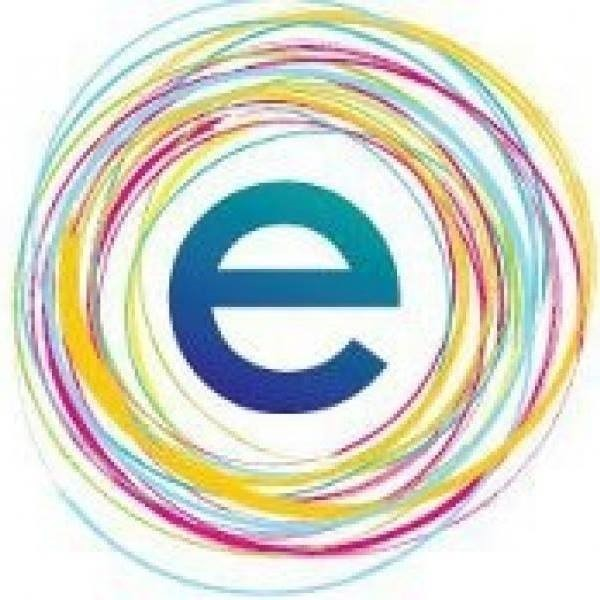
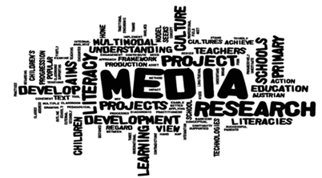
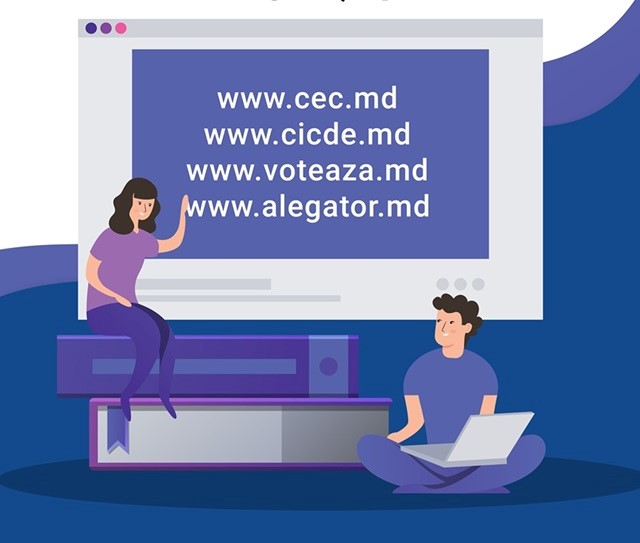
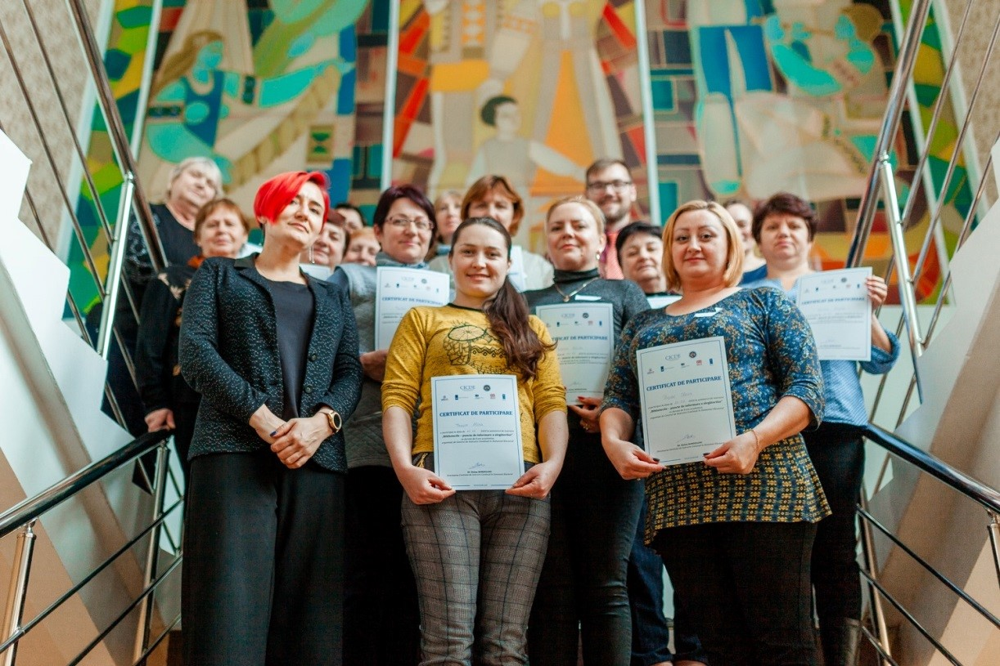

Biblioteca Publică Teritorială Chirca
Biblioteca Publică Teritorială Chirca

Proiecte
Iniţiativa e-Ambasadori ai serviciilor electronice publice 2018

Programul Novateca în parteneriat cu Centrul de Guvernare Electronică, a lansat în anul 2016
iniţiativa e-Ambasadori ai serviciilor electronice publice, care are scopul de a dezvolta
cunoştinţele şi abilităţile bibliotecarilor în promovarea serviciilor electronice publice şi
asigurarea suportului cetăţenilor în accesarea e-serviciilor la bibliotecă. Începând cu luna martie
2018 a fost lansată la nivel naţional instruirea e-Ambasadorilor locali.
Datorită coordonatorului regional de la Novateca, Oleg Potîngă, am fost propusă eu să livrez
instruiri în e-servicii guvernamentale pentru bibliotecarii din raionul Anenii Noi în luna aprilie
2018. Am livrat câte două instruiri cu durata de o zi jumătate şi un atelier de follow-up de
jumătate de zi pentru 8 bibliotecare din raionul Anenii Noi.
După aceste două instruiri, fiecare bibliotecară a urmat să dezvolte şi să livreze câte un serviciu
modern de bibliotecă menit să faciliteze accesul cetăţenilor simpli şi entităţilor juridice la
oportunităţile pe care le oferă e-guvernarea.
Proiectul „Promovarea informării alegătorilor”
Biblioteca Publică Teritorială Chirca s-a implicat activ în proiectul „Promovarea informării alegătorilor” (septembrie 2018 - februarie 2019) . A fost o campanie de informare și sensibilizare, pe care IREX a desfășurat-o împreună cu o companie specializată în PR, dar bibliotecarii au implementat proiectul în educarea și informarea alegătorilor despre sistemul electoral mixt pentru alegerile parlamentare din 24 februarie 2019.
Proiectul „Consolidarea Presei Independente și a Educației Mediatice în Moldova ”
IREX Europa în parteneriat cu organizația INTRENEWS în Republica Moldova (programul Media-M) a organizat cursul de formare de formatori în Educația Mediatică pentru bibliotecari din diferite regiuni ale țării. În lunile aprilie și mai am beneficiat de o instruire de „Formare de formatori în domeniul Educației Mediatice” (martie – mai 2019). A urmat organizarea mai multor instruiri, la care am transmis cunoștințele acumulate membrilor comunității în teritoriile în care activăm. Rolul bibliotecarului este de a ghida și orienta utilizatorii în selectarea informației adevărate, în verificarea știrii din mai multe surse, în deosebirea imaginii autentice cu cea trucată etc. Fiecare bibliotecar cu competențe media poate fi atât receptor cât şi emițător de informaţii. Dacă alege să fie un producător de informații, atunci devine un jurnalist civic care transmite o știre corectă, precisă și clară. În acest context am livrat 5 instruiri pentru copiii de la gimnaziu.
Proiectul „Consolidarea democrației în Moldova prin alegeri incluzive și transparente”
Centrul de Instruire Continuă în Domeniul Electoral (CICDE) pe lângă Comisia Electorală Centrală (CEC) a organizat un șir de activități de educație civică în cadrul Proiectului „Consolidarea democrației în Moldova prin alegeri incluzive și transparente”, implementat de PNUD Moldova cu suportul financiar al Agenției Statelor Unite pentru Dezvoltare Internațională, Ambasadei Marii Britanii la Chișinău prin intermediul Fondului pentru Buna Guvernare și al Ambasadei Olandei prin Programul Matra. Am fost selectată pentru participare la instruirea de 2 zile pentru formatori în luna august a anului curent. După două zile de instruire la Vadul lui Vodă am venit acasă cu un bagaj plin de cunoștințe în domeniul electoral. Am aflat multă informație interesantă și utilă pe care am transmis-o la diferite grupuri de beneficiari. 10 bibliotecari din raionul Anenii Noi și-au îmbogățit cunoștințele despre ciclul electoral, tipurile de alegeri, cât de importantă este participarea la alegeri, care este procedura de vot, despre validarea alegerilor și repartizarea mandatelor. Alt grup au fost elevii de la gimnaziul Chirca de la clasa II-IX. Prin simularea alegerilor am aflat care sunt activitățile și serviciile lor preferate la bibliotecă. Copiii au aflat istoria alegerilor și cât de important este să faci alegerea corectă. Angajații de la grădiniță au analizat câteva cazuri speciale care s-ar putea produce în ziua alegerilor și au înțeles cum se face repartizarea mandatelor. Pentru că am trecut la turul doi de alegeri locale generale, am instruit fiecare utilizator matur care a beneficiat de servicii de xeroxare la bibliotecă despre desfășurarea alegerilor din 20 octombrie 2019 și care sunt consilierii locali aleși. Am înțeles cât e de important este ca oamenii să fie informați la timp despre desfășurarea alegerilor și importanța participării la vot (august – noiembrie 2019).
| I. Scopul | Descoperirea lucrărilor literare a unor scriitori prin organizarea/desfășurarea diferitor activități/servicii de bibliotecă pentru stimularea utilizatorilor de a se implica în promovarea cărții și a lecturii. |
|---|---|
| II. Obiective | 1. Dezvoltarea cunoștințelor și abilităților de utilizare a calculatorului;
2. Cunoașterea mai bine a unor scriitori și lucrările lor literare care sunt mai puțin cunoscute publicului din comunitate; 3. Diseminarea tuturor succeselor pe pagina de facebook a BP Chirca și distribuirea în grupul public LecturaCentral după fiecare serviciu sau activitate. |
| III. Descrierea desfășurării activităților, serviciilor pas cu pas | 1. SMB „Calculatorul pentru toți”). În cadrul acestui serviciu utilizatorii au căpătat
cunoștințe și abilități noi de utilizare a calculatorului. Ei au învățat a utiliza Programul
Microsoft Word: au copiat poezii și curiozități/citate scrise de Mihai Eminescu (ianuarie
2020), Grigore Vieru (februarie 2020); au dat un aspect de pagină cât mai atractiv, au
selectat de pe internet date biografice ale scriitorilor și le-au plasat în document; au
înserat un portret. Apoi au citit în glas tot ce au tapat, astfel au făcut cunoștință cu
lucrările scriitorilor.
2. „Întâlnirea de suflet cu autoarea Irina Nechit”. Pe 3 martie 2020 împreună cu elevii din clasele II-V din Chirca am descoperit-o față în față pe scriitoarea Irina Nechit la o întâlnire cu cititorii care s-a petrecut în sala de festivități a gimnaziului din sat. Coordonarea organizării pentru desfășurarea acestui eveniment le-am dus pe pagina de Facebook a BPT Chirca. 3. Promovarea operelor literare ale scriitorului Aurelian Silvestru. În perioada epidemiei din țară privind infecția COVID – 19 BPT Chirca s-a implicat altfel. Utilizatorilor le-am propus să stea acasă și să citească cărți online. Am încercat să-i aduc pe scriitori mai aproape de cititori prin distribuirea înregistrărilor de pe YouTube în care singuri autorii își citesc lucrările lor. Astfel, începând cu 16 martie 2020, în fiecare zi de luni până joi au fost propuse lecturile: „Îngerul rănit”, „Ambiția”, „Izvorul din noi”, „Fereastra”, „Omul nemulțumit”, „Iertarea”, „Sufletul”, „Semnul divin”, „Visul”, „Talentul”, „Țara”, „Discordia” scrise și citite de scriitorul Aurelian Silvestru. Stela Hadjiu (profesoara de limbă română), audiind opera „Ambiția” a comentat în felul următor: „Am rămas profund impresionată de parabolă, tristă... te face să reflectezi asupra unor lucruri esențiale: Bunătate, Omenie, Dragoste, susținere și ajutor...mulțumim, d. Bibliotecară.” 4. Promovarea poveștilor scrise și citite de scriitorul Petre Crăciun. În zilele de vineri, în perioada martie-iunie am recomandat poveștile: „Țara copiilor fericiți”, „Drumul Curcubeului”, „Stelele îmi spun povești”, „Floarea Înțelepciunii și Iarba Puterii”, „Victoria gărgăriței de lemn”, „Cămașa fermecată”, „Motanul fermecat și Țara Baloanelor Colorate” , „Fata cea frumoasă și fântâna cu apă tulbure”, „Petruț și mătura vrăjitoarei”, „Împăratul jucăriilor vesele”, „Peștișorul de aur și Izvorul bunătății”, „Țara unde oamenii nu visau niciodată”, „Copilul care aduce Învățătura”, „Omul care schimba anotimpurile”, „Țara Balaurului beteag” citite de însuși scriitorul Petre Crăciun. 5. Volumul „coronaJURNAL. gânduri din izolare”. În luna aprilie am urmărit cu atenție apariția volumului „coronaJURNAL. gânduri din izolare" apărut la Editura Zorio din București. La invitația scriitorului Petre Crăciun 35 personalități au scris relatări despre izolare, angoase, semne de întrebare, dezamăgiri, speranțe, o altfel de lume în perioada de autoizolare. Lansarea acestui volum/fotografie de moment a fost online pe 29 aprilie 2020. Câteva zile la rând am distribuit în grupul Lectura Central fragmente din aceste relatări (o altfel de lectură online). 6. Ziua Mondială a Poeziei (6 distribuiri). Pe 21 martie 2020 de Ziua Mondială a Poeziei am promovat poezii scrise de mai mulți autori: „Un buchet de flori” (video) și „Iată-așa se face scrisul” de Alexandru Plăcintă, „Te rog mă iartă” (video) de Vitalie Moisei, „După rău e bine” de Lili Șipoteanu, „Ce este-un vers?” de Mihai Vâlcu și „Izvorul dătător de viață” de Ana Onică. 7. Inițiativa „O nouă viață poeziilor”. În luna mai de la un gând la altul s-a născut inițiativa „O nouă viață poeziilor” scrise de Alexandru Plăcintă. În colaborare cu scriitorul am înregistrat și publicat pe YouTube, apoi au fost distribuite pe Facebook poeziile: „Să ne iubim, să ne iertăm”, „Bucuros a fost pământul”, „Ce poate fi mai frumos?”, „Viața omului”, „Ruga”, „Noapte de vară”, „Multe, multe se întâmplă”, „Ani am adunat cuvinte”. Poeziile le-am elaborat în programul Movie Maker. Aceste înregistrări sunt o realizare deosebită în care foarte bine se îmbină cuvântul cu muzica și imaginea. 8. Concursul local „Lecturi în izolare”. Pe 3 iulie am lansat un concurs de fotografii „Lecturi în izolare” cu cartea citită în perioada stării de urgență în RM. Fotografiile celor 7 participanți le-am adunat într-un clip video și l-am postat pe Facebook. 9. Articolele „Promovarea lecturii altfel” și „Inițiativa O nouă viață poeziilor”. Despre unele activități desfășurate de BPT Chirca din cadrul proiectului „Descoperă-mă” am scris în articolele „Promovarea lecturii altfel” (publicat în ziarul „Adevărul de Anenii Noi” Nr.212 din 5 iunie 2020 și în revista „Realități culturale” Nr.6/2020) și „Inițiativa O nouă viață poeziilor” (publicat în ziarul „Adevărul de Anenii Noi Nr.216 din 14 august 2020). Articolele au fost postate online pe paginile de Facebook Adevărul de Anenii Noi și Secția Cultură Anenii Noi. |
| IV. Note p/u facilitarea lecturii | Lucrările sunt selectate minuțios de bibliotecar sau scriitor.
Pentru a trezi interesul pentru lectură utilizatorii sunt motivați să urmărească pagina de Facebook a bibliotecii BP Chirca Negru Marina. |
PROIECTE/INOVAȚII NAȚIONALE (COORDONARE)
- Proiectul „Consolidarea democrației în Moldova prin alegeri incluzive și transparente”
Biblioteca Publică Teritorială Chirca s-a implicat activ în proiectul „Consolidarea democrației în Moldova prin alegeri incluzive și transparente”” (februarie 2020 - august 2020) . CICDE m-a desemnat în calitate de bibliotecar coordonator în raionul Anenii Noi care am coordonat și monitorizat activitățile desfășurate de către 15 bibliotecari, iar la finalizarea activităților am raportat coordonatorului CICDE. Angajamente asumate ca bibliotecar coordonator local: invitarea a 15 participanți/ bibliotecari din raion la instruirea organizată de CICDE; identificarea unei săli unde s-a desfășurat prima instruire; colectarea datelor bibliotecarilor pentru întocmirea contractelor de prestări servicii, copiile buletinelor, rechizitele bancare cu ștampila umedă; semnarea contractelor trimise de coordonatorul CICDE prin email și returnarea acestora; monitorizarea îndeplinirii obligațiunilor contactuale de către bibliotecarii pe care i-am coordonat; scanarea și remiterea listei participanților de la fiecare instruire la adresa; realizarea postărilor pe Facebook însoțite de poze de la activități, cu #CICDE și completarea raportului online.
